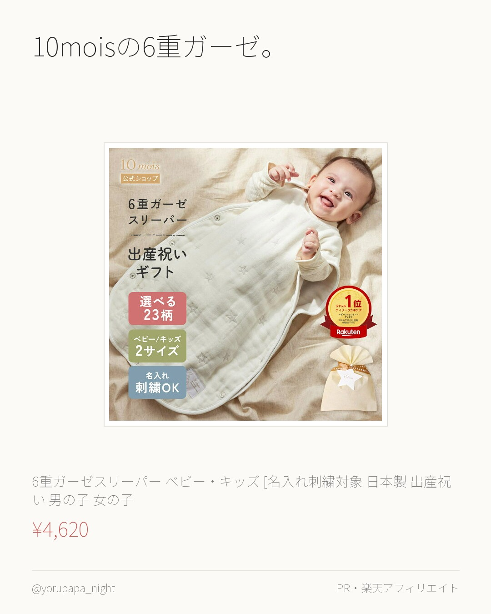
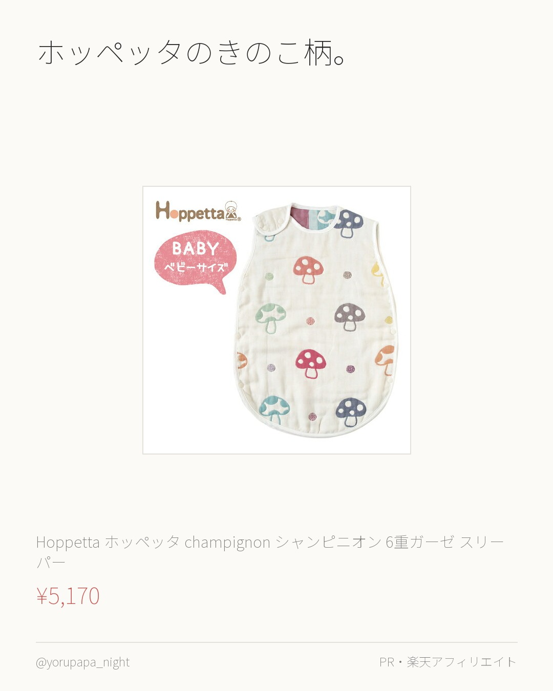
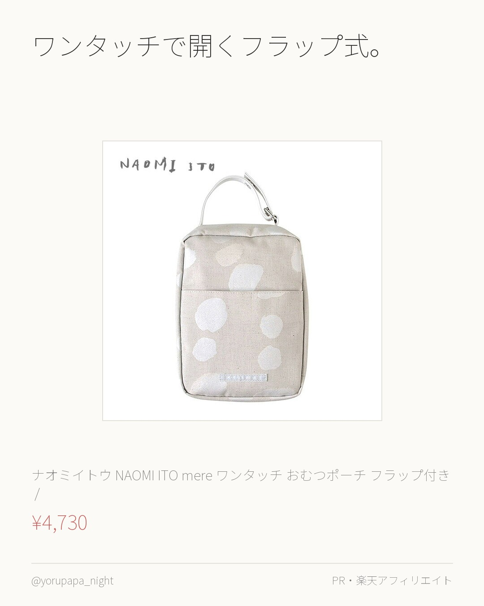
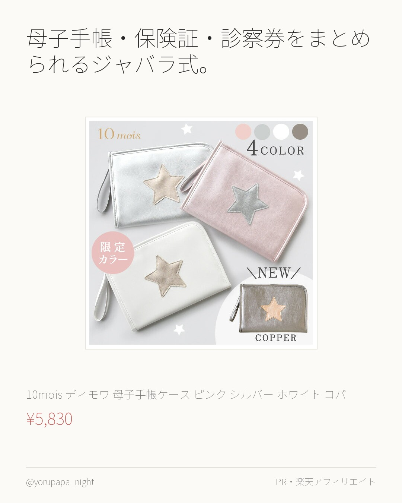
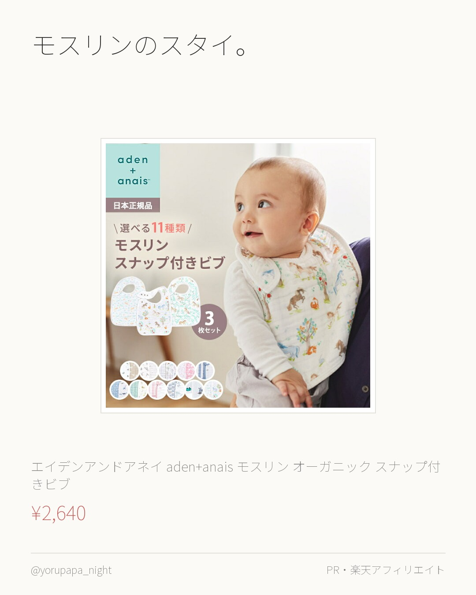

寝かしつけ・夜泣き夜を越えるための道具。夜間対応で消耗している人向け。

10moisの6重ガーゼ。洗うたびにふくらんで手触りが変わっていきます。ベビー用品にしては色が落ち着いていて、リビングに出しっぱなしでも気にならないのが決め手でした。 【一部予約】【10mois 公式】 6重ガーゼスリーパー ベビー・キッズ [名入れ刺繍対象 日本製 出産祝い 男の子 女の子 赤ちゃん キッ ¥4,620 楽天市場で見る
ホッペッタのきのこ柄。柄物なのにうるさくないのは色数を絞ってあるからだと思います。6重ガーゼで通年使えて、寝たまま着せられる形。 【最新仕様】【日本製】 Hoppetta ホッペッタ champignon シャンピニオン 6重ガーゼ スリーパー ベビー7225 フィセル ¥5,170 楽天市場で見るおむつまわり1日10回以上さわる場所。ここが楽になると生活が変わる。

ワンタッチで開くフラップ式。片手がふさがった状態で開けられるのが、おむつ替えでは効きます。同じ用途の15件で比べると、最安より550円高いだけでレビューは2倍ついていました。 ナオミイトウ NAOMI ITO mere ワンタッチ おむつポーチ フラップ付き / ピエール ( 赤ちゃん ベビー 男の子 女の子 おし ¥4,730 楽天市場で見るそのほか育児グッズ分類しきれなかったもの。

母子手帳・保険証・診察券をまとめられるジャバラ式。産院にも小児科にも同じものを持っていけます。事務的な見た目じゃないので普段のバッグに入れても浮きません。 10mois ディモワ 母子手帳ケース ピンク シルバー ホワイト コパー 【母子手帳ケース】 【カードケース】 【ダイアリーケース】【マル ¥5,830 楽天市場で見る
モスリンのスタイ。薄いので首まわりがもたつかず、乾きも早いです。3枚あれば1日回せます。正規品なので柄の色味がきれい。 エイデンアンドアネイ 【安心の正規品】 エイデンアンドアネイ aden+anais モスリン オーガニック スナップ付きビブ よだれかけ 3 ¥2,640 楽天市場で見る